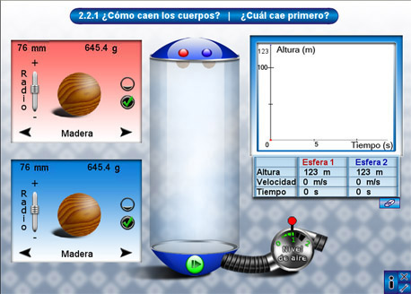
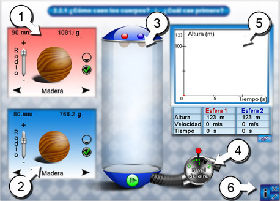
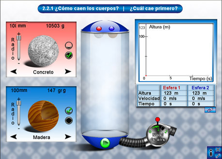
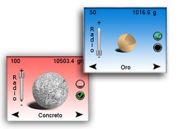
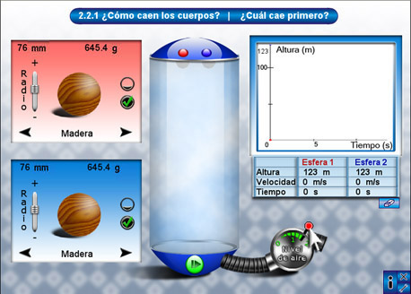
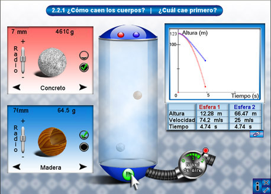
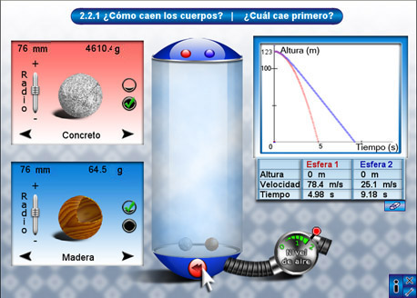

Unidad Interactiva 1.2.1
¿Cuál cae primero?
RES
Propósito
El interactivo permite al alumno formalizar el fenómeno de caída libre a través de la manipulación de variables como la cantidad de aire, el material, el radio y la masa de algunas esferas.
Instrucciones generales
Este menú aparece a lo largo del interactivo y conserva su funcionalidad.
Los botones tienen la siguiente función:
Brinda acceso a la ayuda del interactivo.
Cierra el interactivo.
¿Cuál cae primero?
El interactivo es un pequeño laboratorio en el cual se puede observar el comportamiento de la caída de esferas de diversos materiales a través de la manipulación de distintas variables: presencia de aire, material de fabricación, radio, masa, y estructura hueca o compacta de las esferas.
Cuando se accede al interactivo, aparece una pantalla como la siguiente:

En la siguiente imagen se describen brevemente los componentes del interactivo:

- Esfera uno, identificada por el color rojo. Características: material de fabricación, radio, masa, estructura hueca o compacta.
- Esfera dos, identificada por el color azul. Características: material de fabricación, radio, masa, estructura hueca o compacta.
- Tubo de vacío dentro del cual caen las esferas uno y dos.
- Extractor de aire del tubo de vacío. Si el nivel es cero indica que el tubo está completamente vacío, si la palanca está colocada en otra posición, el tubo contiene aire. A mayor nivel, mayor cantidad de aire.
- Gráfica de altura-tiempo de las dos esferas. Despliegue de la altura, velocidad y tiempo según las características seleccionadas.
- Menú de navegación.
El material de las esferas puede ser: madera, concreto, unicel, cristal, aluminio y oro. Cada material tiene una densidad, la masa resultante en cada esfera depende de la densidad del material y del radio seleccionado, y si es hueca o compacta.

Para cambiar de material, presione las flechas de color negro en los apartados correspondientes a las características de las esferas. El radio tiene un rango de valores entre 50 y 100 milímetros, y se manipula con la barra de desplazamiento. La composición se elige con uno de los dos botones con forma circular hueca o compacta.

Después de configurar cada una de las esferas, elija el nivel de aire dentro del tubo de cristal. En el extractor de aire colocado en la parte inferior derecha del tubo se encuentra una palanca; muévala hacia la izquierda para extraer aire o hacia la derecha para ingresar aire al tubo. Debajo de la palanca hay un medidor del nivel de aire con la escala (0, 1 y 2), en color verde. Las modificaciones en el nivel de aire también se ven reflejadas dentro del tubo; ponga atención al grado de transparencia y úselo como guía.

Para iniciar el experimento de la caída de las esferas, presione el botón de color verde que se encuentra en la parte inferior del tubo de cristal; dicho botón también funciona para pausar la caída de las esferas. Cuando inicia la caída de las esferas seleccionadas, se observa el comportamiento en la gráfica, se muestran además los valores de la altura, la velocidad y el tiempo de caída de cada esfera.
Nota: la altura inicial desde donde se dejan caer las esferas es de 123 m, parecida a la altura de un edificio de 30 pisos, es decir, 20 pisos menos que la Torre Latinoamericana, ubicada en la ciudad de México.

Si desea reiniciar el experimento, debe presionar el mismo botón en la parte inferior del tubo (que ahora es de color rojo), con ello regresará las esferas a su lugar. Al cambiar el botón de nuevo a color verde, se puede reiniciar el experimento.

La gráfica se mantiene, a menos que decida borrarla; para hacerlo, presione el botón con la imagen de una goma de borrar en la parte inferior de la gráfica, justo debajo de los datos.
Sugerencias didácticas.
Eje Temático: Bloque I. El movimiento. La descripción de los cambios en la Naturaleza.
Tema: El trabajo de Galileo: una aportación importante para la ciencia.
Subtema: ¿Cómo es el movimiento de los cuerpos que caen?
Destrezas científicas: Aplicar los conceptos asociados a la caída libre.
Conocimientos previos:
Primaria: 5° y 6°. año. Ciencias Naturales. Bloque IV. Energía para transformar. Concepto de movimiento. Matemáticas. Eje de medición. Los alumnos saben medir el tiempo en segundos.
Secundaria: Los alumnos manejan el concepto de rapidez como prerrequisito para comprender el movimiento acelerado y, en particular, la aceleración de la gravedad. Los alumnos saben cronometrar el tiempo que tarda un objeto en moverse y calcular su rapidez.
Ideas previas: Los alumnos confunden rapidez con aceleración, además de que creen que la velocidad de caída de los cuerpos depende de su peso.
Estrategias didácticas:
Pida a los alumnos que formulen hipótesis sobre lo que podría suceder si cambian las variables de la cantidad de aire, el material, el radio y la masa de las esferas.
Realice experimentos con el mismo tipo de material pero con diferente radio y con diferentes niveles de aire en el tubo. Cambie los materiales, cambie su composición e intente de nuevo. Se recomienda que realice varios experimentos y deje las gráficas anteriores para poder compararlas.
Promueva la participación y fomente que los alumnos expliquen lo que sucede en los diferentes experimentos, por ejemplo, ¿por qué en presencia del aire, las esferas con mayor radio no caen tan rápido como las pequeñas? Una respuesta posible podría ser que el área de contacto o roce con el aire es mayor, lo cual frena la caída.
Créditos
Autor
Carlos Alberto Jaimes Vergara
Propuesta de contenido
María Alejandra González Dávila
Esta unidad interactiva fue desarrollada en el ILCE por el equipo de Ciencias II.
Como la unidad utiliza el applet Descartes, propiedad del Ministerio de Educación de España,
sus contenidos se distribuyen bajo una licencia de